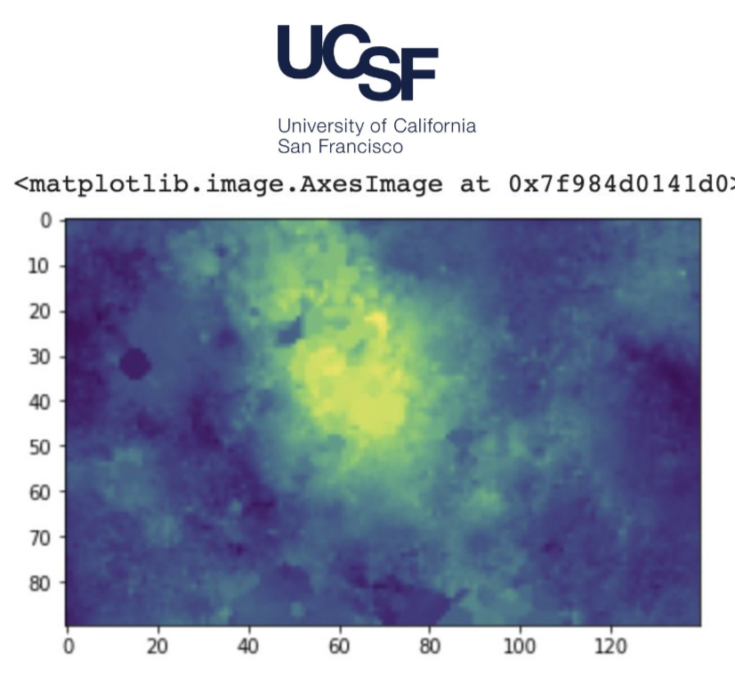
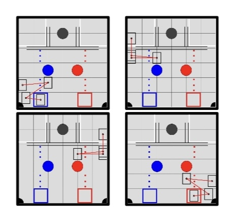

Research Intern @ UCSF
AI/ML Research | Work Experience
Conducted research with a Ph.D. student at UCSF on SPOKE (Scalable Precision-medicine Oriented Knowledge Engine) and created a convolutional neural network to diagnose patients using EHR data.
Software Intern @ Inclusive World
UI/UX, SDLC, QA Testing | Volunteering
Worked with differently-abled students on creating the UI/UX of a cognitive app with ClearlyBlue, running various tests cases for Patelco Credit Union, learning about website development, and learning the Software Development Life Cycle.
Software Captain of FTC Robotics Team
Robotics | Club
Researched, coded, and debugged different software algorithms and managed the software team.